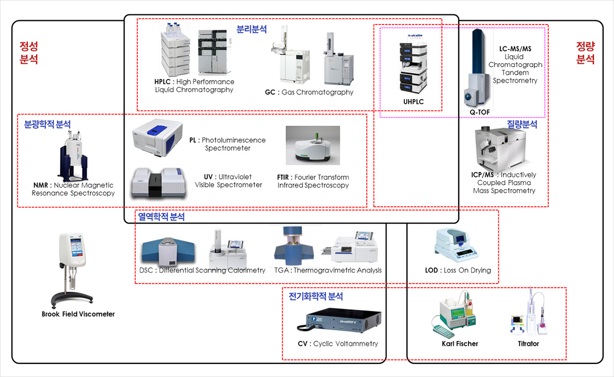

분석시설
분석시설
우리 (주)CMDL은 품질관리를 위한 다수의 장비와
숙련된 분석 인력을 보유하고 있습니다.
핵자기공명분석기(NMR), 질량분석기(LC-MS/MS), FT-IR, 유도결합플라즈마 질량분석기(ICP-MS),
고성능 액체 크로마토그래피(HPLC), 가스 크로마토그래피(GC), 자외선/가시광선 분광광도계(UV-Vis), 광분광기(PL),
저온광분광기(Low-Temp. PL) 순환 전압전류측정기(CV), 시차주사 열량 측정(DSC), 열 중량 분석(TGA) 등 규제기관에서 승인한 우수한 시설을 보유, 운용하고 있습니다.